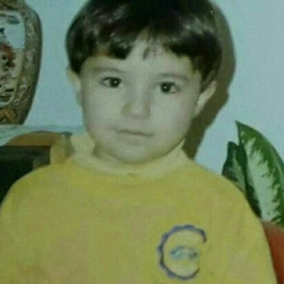

Mohammad Rajabi
Design and HCI
I'm a Digital Designer at A4 Design Houseand a former HCI lecturer at Kharazmi University.
A4 Design Houseand a former HCI lecturer at Kharazmi University.
I care more about how people behave than how things look — and on the side I do creative coding, physical computing, and audio-visual experiments. And I think graphic design is ridiculous.